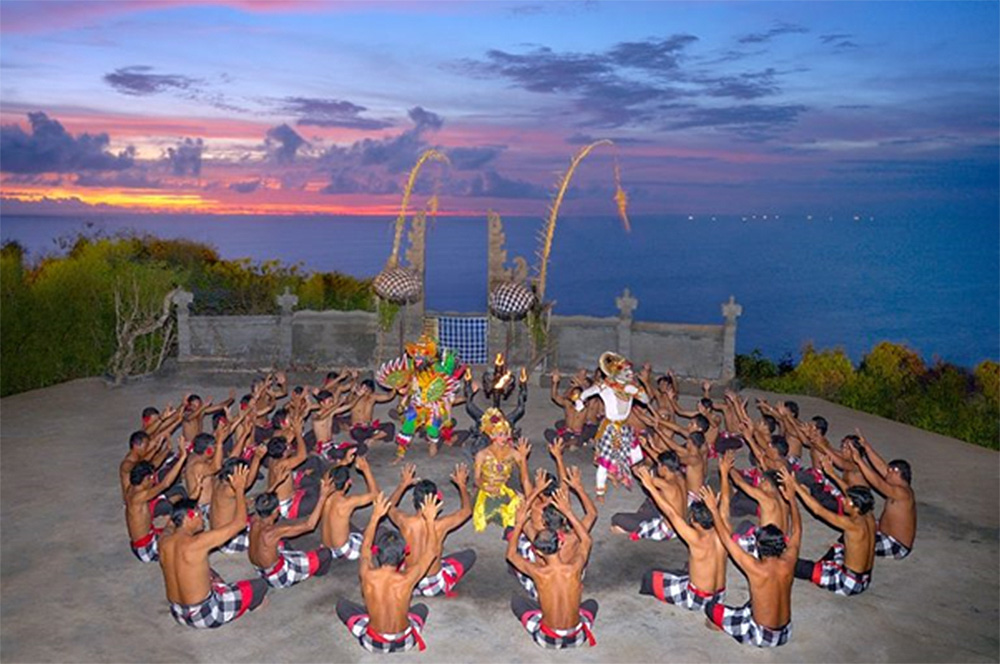
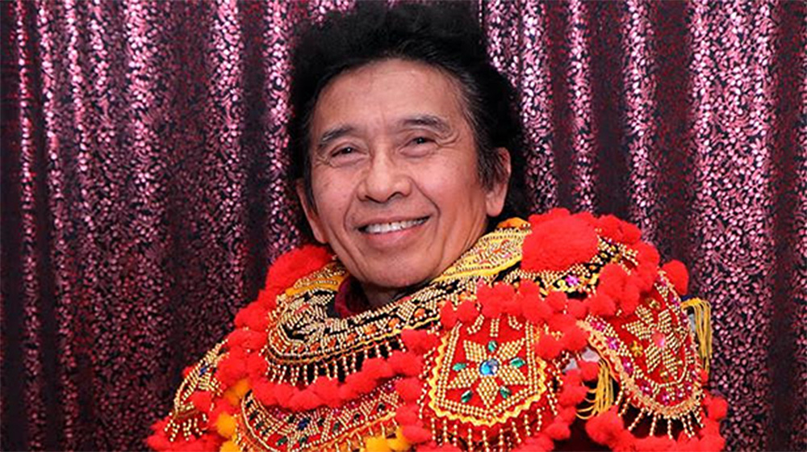

Seni tari Bali pada umumnya dapat dikategorikan menjadi tiga kelompok, yaitu wali atau seni tari pertunjukan sakral, bebali atau seni tari pertunjukan untuk upacara dan juga untuk pengunjung dan balih-balihan atau seni tari untuk hiburan pengunjung. Pakar seni tari Bali I Made Bandem pada awal tahun 1980-an pernah menggolongkan tari-tarian Bali tersebut; antara lain yang tergolong ke dalam wali misalnya Berutuk, Sang Hyang Dedari, Rejang dan Baris Gede, bebali antara lain ialah Gambuh, Topeng Pajegan dan Wayang Wong, sedangkan balih-balihan antara lain ialah Legong, Parwa, Arja, Prembon dan Joged serta berbagai koreografi tari modern lainnya.

Salah satu tarian yang sangat populer bagi para wisatawan ialah Tari Kecak dan Tari Pendet. Sekitar tahun 1930-an, Wayan Limbak bekerja sama dengan pelukis Jerman Walter Spies menciptakan tari Kecak berdasarkan tradisi Sang Hyang dan bagian-bagian kisah Ramayana. Wayan Limbak memopulerkan tari ini saat berkeliling dunia bersama rombongan penari Bali-nya.
Tarian wali
1. Sang Hyang Dedari
2. Sang Hyang Jaran
3. Tari Rejang
4. Tari Baris
Tarian bebali
1. Tari Topeng
2. Gambuh
Tarian balih-balihan
1. Tari Legong
2. Arja
3. Joged Bumbung
4. Drama Gong
5. Barong
6. Tari Pendet
7. Tari Kecak
8. Calon Arang
9. Tari Janger
10. Tari Tenun